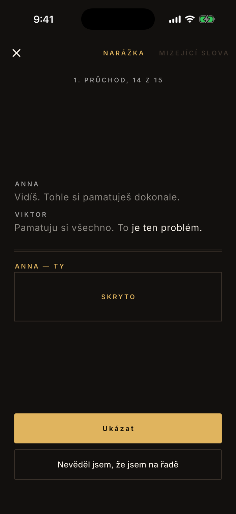
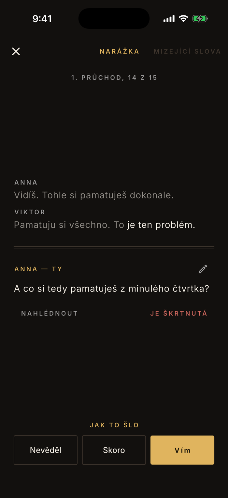
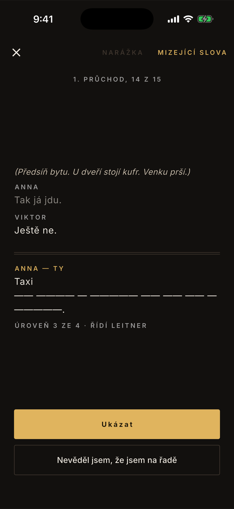
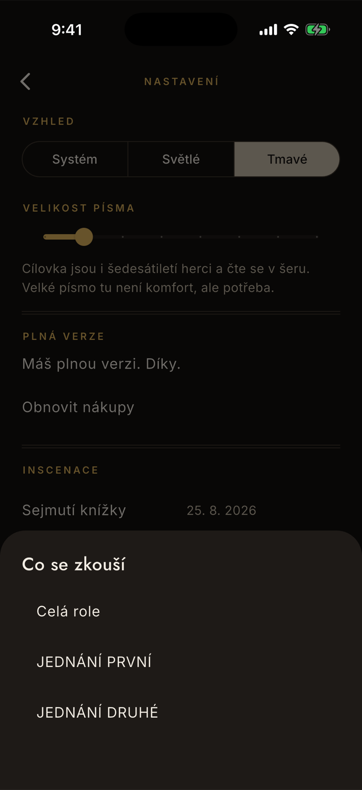

Učení
Jak appka zkouší
Dril nezkouší slova, zkouší nástup. Dostaneš konec partnerovy řeči a máš říct svoje — přesně v té situaci, ve které to na jevišti přijde. Tahle stránka ukazuje, co se na obrazovce děje a podle čeho appka vybírá, co ti dá.
Narážka
Nastupuješ na poslední slova, ne na začátek
Proto jsou poslední tři slova narážky vysazená plnou barvou a zbytek ztlumený. Kontext appka přidává, dokud nemá asi osm slov, nejvýš tři prvky — jedna předchozí replika nestačí, když je jí „Cože?".
Tvoje replika je zakrytá
Vedoucí scénická poznámka zůstane vidět — patří k nástupu, ne k textu. U příliš krátké repliky appka řekne, že není co ubírat.
Ukázat
Odkryje text. Teprve pak se objeví hodnocení — aby se odpověď nedala načíst dřív, než si ji řekneš.
Nevím, kdy jsem na řadě
Vlastní tlačítko, protože je to jiná chyba než neznat text. Když je narážkou akce a ne replika, appka to řekne dopředu: „Tady nastupuješ po akci, ne po replice."

Hodnocení
Tři odpovědi, a nejsou symetrické
Po odkrytí se appka ptá „jak to šlo". Krok nahoru je po jedné přihrádce, pád dolů o dvě — zapomínání je rychlejší než učení a interval na to má reagovat nesymetricky.
Vím · Skoro · Nevěděl
Vím posune o přihrádku výš, Skoro nechá být, Nevěděl shodí o dvě. Přihrádek je pět a od čtvrté se replika považuje za sedící.
Tužka až po odkrytí
Opravit repliku jde rovnou odsud — otevře se stejný panel jako ve čtečce. Před odkrytím tužka schválně není, aby nebyla zadní vrátka k odpovědi.
Je škrtnutá
Když na repliku narazíš a víš, že ji režisér vyhodil, škrtneš ji přímo v drilu. Z drilu zmizí, ve čtečce zůstane.

Mizející slova
Text ubývá, jak ti roste jistota
Druhý režim, přepínač je v záhlaví drilu. Ubírá se ve čtyřech úrovních a řídí je Leitner, ne nastavení — čím výš je replika v přihrádkách, tím méně z ní zůstane.
Od tří slov k pouhým délkám
Úroveň 1 nechá první tři slova a ze zbytku počáteční písmena. Úroveň 2 nechá jen počáteční písmena. Úroveň 3 první slovo a délky. Úroveň 4 už jen délky slov.
Délka slova zůstane vždy
Skryté znaky drží šířku, takže je vidět rytmus věty. Na jevišti se chytáš právě rytmu, ne písmen.
Krátká replika se nemaskuje
Pod čtyři slova se režim tiše vrátí na narážku a řekne to. „Ano." maskovat nelze — a takových replik je ve scénářích celá třetina.

Podle čeho appka vybírá, co ti dá
Co neumíš, chodí mnohem častěji
Není to fronta ani pořadí ve scénáři, ale losování s váhami. Replika v nejnižší přihrádce má váhu 32× vyšší než zvládnutá — každá přihrádka výš váhu půlí. Proto se text, který drhne, vrací sám a nemusíte nic vybírat.
Pád na jevišti váží dvakrát
Zapomenout u stolu a zapomenout na jevišti nejsou totéž. Jevištní pád váhu repliky zdvojnásobí a navíc jí úplně zavře cestu k „sedí", i kdyby přihrádka byla plná. Že replika spadla na jevišti, se appka dozví ze záznamu po zkoušce — a ten je součástí plné verze. Bez ní dril pracuje jen s tím, jak vám text jde u stolu.
Co jste právě dali, si chvíli odpočine
Replika se vrací po 1, 2, 4, 8 a 16 dnech podle toho, jak vysoko je. Sedí to na šestitýdenní zkoušení: zvládnutý text se vrátí ještě dvakrát před premiérou, ale nezdržuje každý večer. Odpočívající replika se neztratí, jen je mnohem méně pravděpodobná.
Táž replika nepřijde dvakrát za sebou
Ta, kterou jste právě viděli, má váhu sraženou na setinu. Prototyp appky tohle neměl a byla to jeho největší slabina — replika se mohla vrátit hned v dalším tahu.
Škrtnuté repliky z drilu vypadnou
Co je škrtnuté, se nedriluje ani nepočítá do postupu. Ve čtečce ale zůstává — škrt není smazání.
Nastavení
Co si můžeš určit
Rozsah zkoušení je jediná věc, která mění, z čeho tě appka zkouší. Najdeš ji v nastavení pod Co se zkouší.
Celá role, nebo jedno dějství
Nabídnou se dějství, která appka ve scénáři našla. Když se zítra zkouší druhé jednání, nastav ho — dril i postup se pak počítají jen z něj.
Co nastavit nejde
Obtížnost mizejících slov (řídí ji Leitner), délku narážky (je automatická) ani délku sezení — dril běží, dokud ho nezavřeš. Je to schválně: čím méně se nastavuje, tím méně se před zkoušením odkládá.

Proč se rozlišuje stůl a jeviště
U stolu zapomenete a nic se nestane. Na jevišti zapomenete a stojí tam s vámi kolegové. Appka proto vede zvlášť, kde replika spadla, a jevištní pád bere mnohem vážněji — vrací ji častěji a nepustí ji mezi zvládnuté, dokud ji nedáte znovu. Vstupem je záznam po zkoušce, který patří do plné verze; samotný dril u stolu je zdarma navždy.
Stejně tak odděluje neznat text od nevědět, že jsem na řadě. Druhé se stává hlavně tam, kde je narážkou akce, a je to jiná práce než učení slov.
Co je Leitnerova kartotéka
Appka na několika místech mluví o přihrádkách a u mizejících slov napíše rovnou „řídí Leitner". Je to jedna a tatáž věc — a je starší než počítače.
Sebastian Leitner, německý popularizátor vědy, popsal v roce 1972 v knize So lernt man lernen učení s kartičkami v krabici s přepážkami. Kartička, kterou jste dali, se posune do další přihrádky. Ta, kterou jste nedali, se vrátí dozadu. Přepážky měly různou šířku — 1, 2, 5, 8 a 14 centimetrů — takže se do zadních vešlo víc kartiček a jedna konkrétní se vracela tím vzácněji, čím lépe jste ji uměli. Bez jediného drátu z toho vyšlo intervalové opakování.
Nazkoušeno dělá totéž s replikami, jen místo šířky přepážky měří čas. Přihrádek je pět a replika z nich vystupuje po 1, 2, 4, 8 a 16 dnech. „Vím" ji posune o přihrádku výš, „Nevěděl" o dvě dolů. A protože přihrádka říká, jak jistě text umíte, řídí zároveň i to, kolik z repliky v mizejících slovech zůstane.
Kolik už umíš
Procenta, průchody a pruh postupu mají vlastní stránku — Kolik už umíš. Nejdůležitější věta odtamtud: procento se vztahuje k tomu, co se zkouší, ne k celé roli.
Chová se dril jinak, než byste čekali?
contact@lukashula.cz